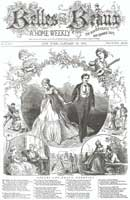
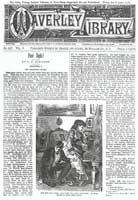
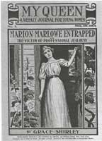

This list of dime novel romance series and story papers is in alphabetical order by publisher.
Beadle & Adams
George P. Munro
Norman Munro
Street & Smith
Arthur Westbrook
Beadle and Adams
Belles & Beaux: A Home Weekly for Winter Nights and Summer Days. [1874]


It was a story paper of exceptional quality for a mass produced, cheap periodical. It was large in size by storypaper standards–16 inches by 11 1/2 inches. This large size gave it a sense of importance, and provided ample room for large, eye-catching cover illustrations. In the world of cheap publishing, in which absolute economy was required to turn a profit, the extra paper and more detailed and larger illustrations with their attendant increase in costs, represented a more substantial investment by the publishers. This seems to suggest that Beadle & Adams were hopeful that the “glitz” of the storypaper, combined with the popular authors, would earn it an instant following. The affect may have been the opposite, for the large size of the paper made it hard to carry and difficult to read, matters of concern to working women who often read on their way to work or on their lunch breaks in small rooms or on the streets.
Despite its superior quality, its use of well-regarded authors, and the combination of quality design, printing, and paper, it only ran for 13 issues before it was discontinued in April 1874. Indeed, it seems the publishers were a bit skeptical about their idea to reach this new audience of all women. This possibility is suggested by the unusual move of excluding their name from the masthead. Instead of Beadle & Adams, the publisher is listed as Frank Star, an employee of the firm. Since no Beadle & Adams business records are known to exist, it is hard to say why they decided to end publication so soon after it began. Three months is hardly sufficient time to develop a readership, but it seems Beadle & Adams did not want to risk capital on a venture that did not produce an immediate return and that they did not sell as many issues as they deemed necessary to make the venture profitable. Rather than develop an audience slowly, they opted to cease publication.
Cheap Edition of Popular Authors [1875-1877]
The Cheap Edition of Popular Authors, while not directly addressed to women by virtue of its title, was comprised mainly of women’s sensational romances. The series was advertised as “The Cheapest Novels in the World. A Dollar Book for Twenty-Five Cents. The Best Works of the Most Popular Living Authors.” (qtd in Johannsen 183.) These were small books rather than storypapers. The size was nine by six inches, making them more like a modern paperback in appearance. Most of the stories were reprints from Beadle’s Saturday Journal and authors included May Agnes Fleming, Metta Victor, Mrs. E.F. Ellet, Mary Reed Crowell, and oddly enough, Ned Buntline, most famous for his Wild West stories.
Girls of Today: A Mirror of Romance/New York Mirror of Romance[1875-1876]
Complete List of Titles
Beadle and Adams were not ready to give up on the idea of reaching an all female audience. Soon after they ended Belles and Beaux, they launched Girls of Today. If the title Belles and Beaux, with its reference to both men and women, left any doubt about the target audience, Girls of Today made it plain that they hoped to target a story paper especially at women. Like its predecessor, this periodical is noteworthy for its large size, grand, sensational cover illustrations, and its very short life.
It first appeared in December 1875, eight months after the last issue ofBelles and Beaux. Its size was larger than usual for a story paper, 20 by 13 1/2 inches. In addition to the large masthead featuring the title surrounded by two cherubs, each issue featured a large and fairly detailed black and white engraving illustrating exciting moments in the story. Perhaps Beadle & Adams felt the price of Belles and Beaux had been a deterrent to its success, for Girls of Today was sold for only five cents an issue, rather than the customary dime. Like Belles and Beaux, Girls of Today contained serialized stories, short stories, poems, columns such as “Notes, News and Chat,” letters to the editor, and letters from women asking for advice on issues such as etiquette, courtship, and education.
This paper, too, was short-lived, lasting only a bit longer than Belles and Beaux. It ran for 25 issues from December 1875 to May 1876. It seems that Beadle and Adams were just a bit ahead of the times in their attempt to reach an all female audience, or that they were in the process of developing an audience who did not quite think of themselves as a specific group of readers. The fact that the paper ran stories similar to those that appeared later successful book series, such as the Eagle Library, suggests that the failure of Girls of Today was not a matter of insufficient writing talent.
Though Beadle & Adams were trying to develop a new audience, or to reach one hey felt was already there, they may have had a sense that the goal of reaching an all female audience was diminishing the success of the paper for Girls of Today. Rather than dropping the story paper right away, they morphed it yet again, this time into the gender neutral New York Mirror. The name change was explained thus by the editors:
With the next issue Girls of Today adopts the expressive and beautiful name of the New York Mirror, a change impelled by the fact that, contrary to our expectation, the first adopted title was, in a degree, narrowing the weekly down to a strictly class journal–which it is not intended it shall be. Being a weekly in which Fact, Fancy, and Fiction are delightfully blended, it appeals to all classes, interests, and readers.
This enigmatic comment on readership leaves it up in the air as to which class had adopted the story paper. Did the superior quality of the illustrations attract new middle-class readers not usually associated with “trashy” fiction or put off working-class ones who were disdainful of “putting on airs”? Did the large size and grand masthead put of working readers? It is impossible to say, but whichever way the readership changed, it is clear by the need to change the name that Beadle & Adams felt they weren’t reaching the largest market possible. In terms of the reference to class, it may be that the editors were referring to the age of the readers. Dropping Girls of Today in favor of the New York Mirror may have been a move to reach older readers off by the youthful readership implied by “girls of today.” Whatever the motivation, the title change did not attract the additional readers the publishers felt necessary to make a profit, for the story paper only continued ten more issues after the change.
Regarding the cessation of the story paper, in the last issue Beadle & Adams remarked:
This number is the last issue of the New York Mirror. The success of the paper, though by no means discouraging, is not ample enough to warrant its continuance–an announcement, which, we are sure, all its readers will receive with regret. The list is turned over to the New York Saturday Journal–one of the most popular and admirable of all the weeklies–which will be supplied to the end of the subscription.
Note, Beadle & Adams offered no refunds for subscriptions already paid. But these were probably a very small number of overall sales, if any, as the custom of putting a subscription price on each issue was more of an effort to use the second-class mail to deliver bulk quantities to news dealers than a real desire to sell the weeklies directly to customers.
Waverly Library. “The Only Young Ladies Library of First-Class Copyright Novels Published. Complete and Unabridged. Price but Five Cents Each.” [1879-1886]


The series was successful for Beadle and Adams, and they continued publishing it in varying sizes until 1886. Altogether the Waverly Library, in its two sizes, quarto and octavo, included 353 issues. The Waverly Library in the larger quarto edition was published from November 1879 to May 1884. The quarto size was 11 1/2 by 8 1/2 inches and had a total of 16 pages. The front page was decorated with a large decorative banner and each issue included a black and white illustration on the cover. While published in a series, it was not a serial. Each issue contained a complete, unabridged novel. The price was 5 cents a copy and indeed Beadle and Adams heralded this series as a wonder for it contained “A Fifty Cent Novel for Five Cents!” In 1894, Beadle & Adams abandoned the story paper format and changed to a pocket edition.
The stories were primarily reprints of British authors, which they billed as “the cream of foreign novelists.” Popular American dime novel authors such as Mary Reed Crowell, Arabella Southworth, and Metta Victor (writing under the names Agile Pen, Corinne Cushman, and Rose Kennedy) were included. And indeed, the first title in the Waverly Librarywas Mary Reed Crowell’s The Masked Bride; or, Will She Marry Him?Other titles included Sara Claxton’s The Secret Marriage; or, A Duchess in Spite of Herself, An Ambitious Girl; or, She Would Be an Actress, by Frances Helen Davenport, and Arabella Southworth’s Her Hidden Foes; or, Love at All Odds. It also contained reprints of material previously published in the Riverside Library (a series published by rival Norman Munro, which ceased publication in 1879.) These reprints made it possible for Beadle & Adams to promise that each story would be by “an author of established reputation.” The series also included “classics” such as Charlotte Temple by “Mrs. Rowson”, adventure tales such as Camille; or, The Fate of a Coquette by Alexander Dumas, “literary” works such as George Eliot’s The Sad Fortunes of Rev. Amos Barton, W.M. Thackerary’sLovel, The Widower, Elizabeth’s Gaskell’s Cousin Phillis. and romance favorites from Britian, such as Charlotte Brame’s Dora Thorn.
The series promised to contain only complete novels in each issue. Beadle & Adams attempted a new format that would set them apart from the story papers, which at the time issued each story in installments. Beadle & Adams hoped to capitalize on readers’ frustrations at the delay in gratification that such a method of publishing caused and at the need to pay out for several months to reach the end of a promising story. They promised in the Waverly Library that this series would not subject readers to the “long-drawn-out serial[s]” of the popular weekly, that costs weeks of waiting and much money.” This mixture of tales, all romances in a way, but not yet adhering to the dime novel romance formula, was the norm for the first few years of the series. Slowly, however, a new standard emerged and by the mid 1880s the series focused more on stories by and for women with fewer British domestic tales and stories by men. While a new focus emerged in the library, Beadle & Adams obviously found it hard to stay away from British reprints and the profits they represented. As an example, in 1884 the firm reprinted Charles Dickens’ Hard Times. These intrusions into the romance format would occur with less frequency after 1882. The last years of the series were devoted almost exclusively to the standard authors of dime novel romance.
George P. Munro
The Fireside Companion [1867-?]
The Fireside Companion was not devoted exclusively to women, but it often ran women’s romances by authors such as Laura Jean Libbey. The story paper began modestly, and economically, with lesser known authors and pirated English reprints. The story paper became successful with the introduction of the character “Old Sleuth” in 1872 (Noel 123). In addition to reprinting non-copyrighted English stories, stories were often repeated as well. Little Goldie; A Story of a Women’s Love by Sumner Hayden appeared in The Fireside Companion four times, in 1869, 1871, 1878 and 1883.
New York Monthly Fashion Bazaar [1879-1885]
The first volume of George Munro’s New York Fashion Bazaar appeared November 8, 1879 and featured the story, The Romance of Darkecliffe Hall; or, The Story of My Life on the front cover. The price for each issue was five cents. Interspersed with the stories and short stories, there were fashion plates of both children’s and women’s clothing, small filler items such as a paragraph entitled “Persian Cats,” instructions for fancy work, such as embroidered toilet-cushion covers and embroidered ribbons and worsted braid. The last page was usually a song with music and lyrics. The Fashion Bazaar also regularly featured a small gossip column covering prominent ladies of the day, such as the actress Lydia Thompson, the abolitionist Mrs. Angela Grimke Weld, and Anthony Trollope’s niece, Miss Beatrice Trollope. The only advertisements included are for other Munro publications, such as The New York Fireside Companion and The Seaside Library. The front cover was always illustrated, though the content of the illustration varied. It was most often a scene from the main story, but fashion plates and pictures of personalities, such as Sarah Bernhardt and Marie Christine, the Queen of Spain were also featured. On several occasions color illustration of fashions and fancywork were included inside. A noticeable absence for a women’s magazine was the lack of reader’s letters or direct comments form the editor. The stories are also unusual in that nearly every contribution is anonymous. A few of the short stories have authors given, such as Marah T. Crosse, Geo. Manville Fenn, and Alice Drew, but none of the full-length stories do until issue number 20, March 23, 1880, which featuredJust As I Am by Mary Elizabeth Bradden.
The Seaside Library [1877-1893?]
This series was the mainstay of Munro’s business, running over two thousand numbers. It was extremely popular during the 1880s. According to Biographer in 1883, “The imprint containing the words ‘George Munro’ is the most familiar in the United States” if only because Munro flooded the market with his books (qtd in Shove 56). The Seaside Libraryconsisted primarily of reprinted American, British, and European novels, including romances. It was not especially a series for women, but it did contain multiple romances and sensational tales by women. Its first title was the sensational classic, East Lynne by Mrs. Henry Wood. Other “women’s” stories include Jane Eyre and Adam Bede. Key authors in this series included Mary Elizabeth Braddon, Charlotte Brame/Bertha M. Clay, Wilkie Collins, James Fennimore Cooper, Charles Dickens, George Eliot, Sir Walter Scott, The Duchess [Mrs. Margaret Wolfe Hungerford], and Mrs. Humphrey Ward [Mary Augusta Ward].
In addition to the romances and the sensational stories, the series printed classics, such as Diana of the Crossways by George Meredith, history such as The Life of George Washington by M.L. Weems, and adventures such as Rudyard Kipling’s The Light that Failed. On a distribution note, the series was handled by the American News Company, which distributed cheap fiction primarily to newsstands. In general, bookstores declined to carry “cheap” literature, though eventually they would have to satisfy customers, especially in smaller cities and towns where competition between book and news dealers was stiff (Shove 61). In 1890, the Seaside Series was taken over by J.W. Lovell who published it for two years before returning it to Munro, but by this time the International Copyright Bill had put an end to the profitability of these reprint libraries and the depression of 1893 would further weaken business.
The Sweetheart Series [1898-1903]
Little is known of this series at this time except that it ran from 1898-1903. Based on the title, it may have been a series for women, but more research is needed.
Norman Munro
The Family Story Paper: A Lively, Interesting, and Instructive Weekly[1873-1921]
As the title indicates, this series was devoted to families, so the stories were probably meant to appeal to a range of readers with varied reading abilities and interests. It had a very long run, from 1873 to 1921–for nearly 2,500 issues. It was issued weekly for a price of $3.00 per year, which averaged 5 cents per issue. For most of its life, it was the standard story paper format of 14 by 21 inches. With large pages, small type, and narrow columns, an entire novel could be included in one issue of only eight pages.
The cover of each issue featured a black and white cover illustration. Key women’s authors in the story paper included Mrs. E. Burke Collins, Geraldine Fleming, and Mrs. Alex. McVeigh Miller. Because this story paper was devoted to the entire family, it ran a mix of stories, primarily adventure tales, detective stories and mysteries, and romances. Although it is not specifically a publication devoted to women, it is included on this list because it is a good example of how publishers mixed dime novel romances into material aimed at male and female readers. It shows that not every publisher made an attempt to reach an exclusively female audience. It also suggests that male readers found romances acceptable in the papers they themselves read.
New York Weekly Story Teller. A Story Paper Devoted to Young Female Readers. [1875-1877]
Like other series devoted to female readers, particularly those that were the first to build a female audience in the 1870s, this series had a short life and ran for two years only, from November 1875 to February 1877, for a total of 67 issues. It was published weekly and cost $2.50 for a year’s subscription or five cents an issue. The size was on the large side for a story paper, 14 1/2 by 21 1/2 inches. Typical authors include Mrs. Lenox Bell, Evelyn Gray, and Bessie Turner. (The paper may have folded because it did not appeal to readers. None of the key authors were the most popular writers.) The focus was not primarily on romance. Randolph Cox notes in The Dime Novel Companion that the stories were mostly detective and mystery stories written for a female audience (192). [Note: this publication is rare and not readily available for review. These comments are based on the information based on Randolph Cox’s Dime Novel Companion, as I have not yet seen this story paper.]
Street & Smith
Bertha Clay Library, New Bertha M. Clay Library [1900-1932]
Street & Smith published the Bertha Clay Library from 1900 to 1917. Over its seventeen years, its publication schedule varied, appearing at times twice weekly, twice monthly, and even once a month. It was continued on from 1917 until 1932 as the New Bertha M. Clay Library. Of all the women’s dime novelists, the stories published under the name Bertha M. Clay had the longest running popularity. For after the author’s death in 1884, the name was in continual use by Street & Smith and others until the early 1930s. The cost for each issue in the Bertha M. Clay Library was ten cents, quite a bargain considering dime novels had been the same price for nearly years. That is what cheap books sold for when they first appeared in the 1860s. Like most cheap fiction by this time, the series featured color cover illustrations. The stories in this series were primarily reprints of stories that appeared in earlier series such as the New York Weekly.
Bertha M. Clay was the pen name of Charlotte M. Brame, a British writer who was persuaded to write for American periodicals. In order to circumvent agreements she had made with British publishers, a new name was developed to use on her American publications.. Her initials, CMB, were flipped to BMC, and, hence, in 1876 Bertha M. Clay became her new American pen name. When she died in 1886, the name was continued as a “house name” for Street & Smith. At various points, up to twelve different writers published under the name Bertha M. Clay. [At one point I attempted to create a listing of the titles published under this name, but gave up in discouragement after I reached 346. I estimate that there about 800 titles credited to this name.]
Eagle Library, Eagle Series and New Eagle Series [1897-1932]
This one was of Street & Smith’s later romance series and it primarily relied on material previously published in other Street & Smith publications and the New York Weekly. The series was published from March 1, 1897 to January 1900 under the name Eagle Library, at which point the name was changed to Eagle Series. The Eagle Series continued until 1907, when Street & Smith changed the name again to the New Eagle Series, which was published from 1907 until 1932. Based on my examinations of this series, the New Eagle Series did not contain new material, but focused instead on reprints from earlier Street & Smith publications. From 1897 until 1907 each issue in the series sold for ten cents. The price was increased to 15 cents after 1907. The format was 5 by 7 1/8 inches. As the Eagle Library and Eagle Series the covers had black and white illustrations, normally of a woman’s face framed in a circle or oval. Later editions of the New Eagle Library had color illustrations, often featuring a man and a woman. For an example of one of the later cover illustrations, visit the cover gallery.
Of all the women’s dime novel series, this series is the easiest for collectors to obtain since it is one of the few series to run well into the twentieth century. If the ease of obtaining this series on eBay is any indication, this series was very popular throughout the 1920s, even though it contained nineteeth-century stories. The key authors published in the series represent the empitomy of women’s dime novel romance writers, the classics of the genre, included Ida Reade Allen, Bertha M. Clay, Mrs. E. Burke Collins, Geraldine Fleming, May Agnes Fleming, Charles Garvice, Mary J. Holmes, Emma Garrison Jones, Mrs. Harriet Lewis, Laura Jean Libbey, Mrs. Alex McVeigh Miller, Adelaide Fox Robinson, Effie Adelaide Rowlands, Mrs. Georgie Sheldon, and Charlotte M. Stanley.
Laura Series [1903-1904]
This series was devoted exclusively to works by Laura Jean Libbey. It was a short series of 24 issues which ran from 1903 to 1904. Interest in Laura Jean Libbey’s work was still high at this point, so it cannot be assumed that a decline in her popularity was the reason for this short life of this series. Street & Smith were known for trying new ideas and for quickly cutting a series if it didn’t show immediate promise. Perhaps the focus of this series was simply too narrow. The series featured colored illustrations on the covers and a price of ten cents.
Love Story Library [1926-1932]
This was one of the last love libraries in dime novel format. It was published bi-weekly from July 1926 to December 1932 and was sold for 15 cents an issue. The format was a standard dime novel size, 4 7/8 x 7 inches in size with color illustrations on the covers. The primary source of the content were stories previously published in the Street & Smith serial the New York Weekly or the earlier Eagle Series which ran from 1897-1907. Primary authors included Ira Reade Allen, Gertrude Fleming, Emma Garrison Jones, Mrs. Alex. McVeigh Miler, Effie Adelaide Rowlands, Lurana Sheldon, and Charlotte Stanley. It has the distinction of being the last paper-covered novel series Street & Smith published (Cox 162). [Street & Smith is still in business. Today they concentrate on sports periodicals.]
My Queen: A Weekly Journal for Young Women [1900-1901]


The series was published under the name Grace Shirley, a pen name for by Lurana W. Sheldon, who wrote all of the stories. The editors promised their readers that:
MISS GRACE SHIRLEY the author of these stories, is a country bred girl, who by sheer pluck and determination has won her way in the world despite severe hardships and trails, and consequently is admirably able to write on the subject. The picture of Marion Marlowe which she has drawn for the women of America is no fancy sketch but a story of real life. Incidentally, these tales will depict, as no other series has ever shown, the pitfalls and snares which encircle every girl who attempts to battle with the world in the struggle for existence in a great city. It will be demonstrated that sterling worth will always win in the battle for life — that honesty, courage and virtue, though temporarily placed as a disadvantage, will always triumph in the end. That
“True hearts are more than coronets,
And simple faith than Norman blood”
Is a maxim which may be graven on the hearts of American girls by the example of Marion Marlowe’s career, is the most sincere wish of the publishers.
Miss Shirley invited the comment and criticism of our heroine Marion, from every reader of “MY QUEEN.” Such letters will be printed, if not too long, and especially if they embody a helpful suggestion. Miss Shirley and the publishers aim to make Marion the
IDEAL WOMAN
And are anxious to receive hints and suggestion from every reader that realizes in Marion a partial or complete counterpart of her own personality.
As this promotional clip attests, the series focused on Marion Marlowe, a young farmer’s daughter who goes to New York to work. Several issues deal with her work and adventures in the city and the remainder focus on her travels and adventures as a member of traveling opera company. What makes this series unique and important, is that it represents an attempt to create an ongoing character–a female character repeated from issue to issue in defiance of the dime novel romance formula that marries off the main female character at the novel’s end. Undoubtedly based on the common cheap fiction practice of maintaining long-running male characters, which had proved to be so financially successful for dime novel publishers. It would not be an exaggeration to say that steady male characters, such as Buffalo Bill who was featured in over 500 stories and over 1,700 reprints, Nick Carter, who was the first dime novel series from the house of Street & Smith to feature an on-going character, and Diamond Dick, a miner and cowboy hero who appeared in numerous Street & Smith publications from 1878 to 1911, often saved thier publishers from financial ruin. A well-received character could give new life to a tottering publishing firm.
New Romance Library [1907-1917]
Although this is not a series for women, it is included here because it points to the fluidity of the term romance, which even by the turn of the century did not yet have today’s connotation of a woman’s love stories. In this series the usage seems to connote adventure. The series ran from 1907 to 1917 and included a mix of genres including romance, mystery, and historical adventure by authors such as Alexandre Dumas, Carl Frisbie, and Bertram Lebhar. The price was 15 cents and size was 4/3/4 by 7 1/4 inches with colored illustrations on the covers. By this time nearly all the series have switched to colored illustrations.
The Westbury Library [approx. 1926-1929]
Technically this is not a Street & Smith series, but in reality it was a firm operating under the direction of the Street & Smith, who used an associate to purchase and publish the material of Frank Tousey’s publishing firm. The series focused on the romance works of Bertha M. Clay, Charles Garvice, and E.D.E.N. Southworth, a writer occasionally included with the dime novel romance writers, but generally considered a sentimentalist. The novels in this series are not dated, but the firm operated from 1926 to 1929 and the cover illustrations are suggestive of the 1920s. The series contained about one hundred titles. While business records do not exist to explain why Street & Smith set up a secondary publishing house, inThe Dime Novel Companion Randolph Cox suggests that the materials are of particularly poor quality, even for the dime novel business, and Street & Smith may not have wished to associate their firm with works of a particularly inferior quality [Cox 275].
Arthur Westbrook
The Hart Series [1909-late 1920s]
This series was devoted exclusively to reprints. It ran from 1909 to the late 1920s and published 187 issues. It followed the standard dime novel size, 5 1/8th by 7 inches. Each issue averaged 250 to 300 pages in length and featured the works of well-known dime novel romance writers such as Charlotte M. Brame, Mrs. E. Burke Collins, Caroline Hart, Mary J. Holmes, Laura Jean Libbey, and the great sentimentalist, E.D.E.N. Southworth. Of course, The Hart Series also contained stories by Caroline Hart. Though in general women wrote the majority of women’s stories, the stories of Caroline Hart are an interesting exception. At least 25 Caroline Hart stories, such as Nameless Bess, were actually written by Charles Garvice, a writer who was also a successful writer of women’s romances under his own name.
Sources
Cox, Randolf. The Dime Novel Companion. Westport, Ct.: Greenwood
Press, 2000.
Johannsen, Albert. The House of Beadle and Adams. 3 vols. Norman:
University of Oklahoma Press, 1950.
Noel, Mary. Villains Galore: The Heyday of the Popular Story Weekly.
New York: Macmillan, 1954.
Shove, Raymond. Cheap Book Production in the United States, 1870 to
1891. Urbana, Illinois: University of Illinois Press, 1937.